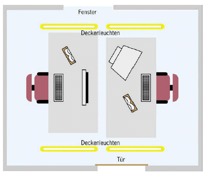

Arbeitsumgebung

- Die Beleuchtungsstärke an einem Bildschirmarbeitsplatz sollte
mindestens 500 Lux betragen.
- Günstig ist die Anordnung der Raumleuchten parallel zum Fenster
und rechtwinklig zum Bildschirm.
- Um störende Reflexionen durch Sonnenlicht zu verhindern, empfiehlt
sich die Aufstellung des Bildschirms im rechten Winkel zu den Fenstern.
Im Bedarfsfall helfen Vorhänge oder Lamellenstores Reflexionen
zu vermeiden.
- Der Lärmpegel sollte in Büros unterhalb von 55 dB(A)
liegen.
- Die optimale Raumtemperatur liegt bei 21-22 °C. Eine relative Luftfeuchte
im Bereich zwischen 30% und 65% ist empfehlenswert.